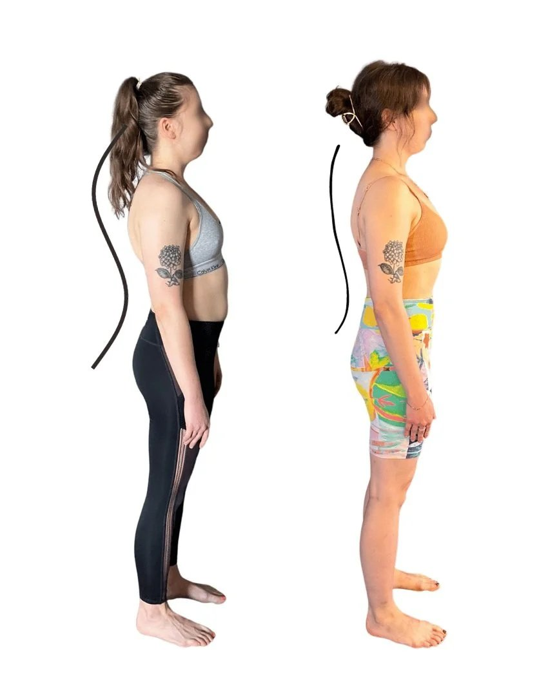
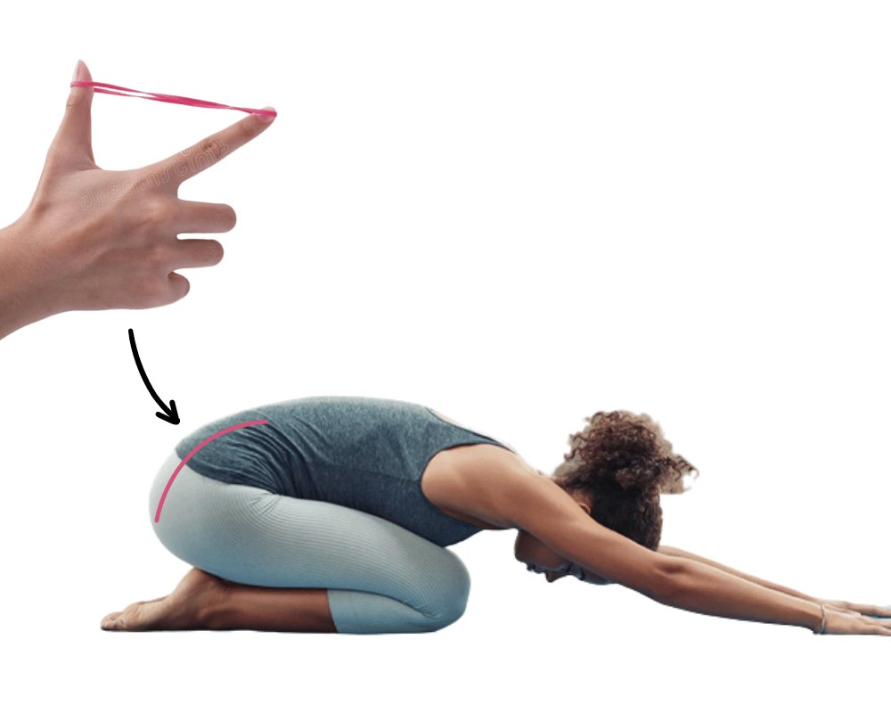

Today, we're diving deep into the world of kyphosis, a spinal condition that's becoming increasingly common. By the end of this article, you'll understand its origin, its impacts, and the steps you can take to correct it.
What Is Kyphosis & What Causes It?
Kyphosis is an excessive, forward rounding of the upper back or the thoracic region of the spine. Often referred to as a 'hunchback', it can arise from a variety of factors, both genetic and environmental. A surprising cause is the lack of tension in our lower core, particularly the Transverse Abdominis (TVA).
The Role of TVA Tension in Kyphosis
Gravity relentlessly exerts force on our spine, intending to pull it downward. Ideally, our core muscles should be robust enough to resist this constant force, supporting our spinal structure. When the TVA and the lower core muscles lack the necessary tension, our spine succumbs to gravity. This causes bending into a kyphotic posture.
Does Working An Office Job Cause Kyphosis?
The modern workspace consists of a significant number of us confined to desks for prolonged hours. This sedentary lifestyle constantly stretches our gluteal muscles whilst shortening the lower core.
Then, when we stand, our core and upper leg muscles lack the tension needed to maintain a neutral pelvis position. This misalignment causes our hips to drift forward. To compensate, the upper portion of our spine bends, pulling it into a kyphotic curve.

Kyphosis reduced naturally
How to fix Kyphosis Posture
Decompressing Your Structure: The first step to correcting this poor posture is understanding the need to decompress. This involves the engagement of our glutes, particularly during contraction. It also requires the apt use of muscle groups such as our TVA and lower core muscles. You should also regularly incorporate thoracic extension into your movement.
Decompressing the rib cage also supports the nervous system. Dry connective tissue in the chest can lead to anxiety and shallow breathing.
The Dietary Connection: The TVA muscle may have difficulty contracting when a swollen stomach constantly stretches it. Avoiding foods that cause this bloating is crucial. Bloating also pushes the spine backwards and the hips forward, worsening kyphosis.
Muscle weakness in the core resulting from bloating is a common starting position for kyphosis development.

Strengthening Core Muscles: Targeted exercises that strengthen the deeper and lower core muscles are crucial. This not only provides better support to our spine but also ensures an optimal tension balance in our midsection. Core muscles include both your superficial core, your TVA and your deeper core muscles.
Shortening the Upper Back Muscles: Engaging in exercises that focus on shortening the thoracic muscles can be highly beneficial. This will counteract the excessive curve and help restore a more neutral spinal position. Decompressing the rib cage and pecs is crucial to completing this step.
Overly-stretched back muscles and a tight chest are characters of Kyphosis. Changing your movement patterns to include more chest extension and back contraction is very effective.
Glute Activation: A primary culprit in kyphosis is glutes that do not activate. Focusing especially on the upper gluteal muscles can make a world of difference. We should incorporate exercises that specifically activate and strengthen these muscles into our daily routine.

Why Stretching Will Only Make Your Kyphosis Worse!
When learning how to fix cervical kyphosis, it's a common misconception that stretching is important. Stretching can provide temporary relief but it's essential to approach it with a nuanced understanding. Here's a detailed look at why stretching might not be the silver bullet you're looking for and could potentially make kyphosis worse.
Muscle Contraction and Length Potential
Before delving deep, let's understand some fundamentals. Every muscle in our body has an optimal length at which it can produce optimal force. The best length for muscles is when the fibres overlap, creating the most cross-bridges for strength. Consequently, the most substantial force potential.
When a muscle stretches beyond its optimal range, it decreases the force it can generate. Conversely, if a muscle is too short, it also cannot contract effectively. Several studies on muscle contraction and length-tension relationships support this principle.
The Issue with Flaccid Glutes and Lower Core
Kyphosis can happen when certain muscles like the glutes and lower core are not strong enough.
Weak or loose muscles have already stretched past their optimal point. This makes it harder for them to effectively support the spine. This causes lack of stability and compression, a cornerstone of kyphosis.

Stretching: Adding Fuel to the Fire
Stretching these already lengthened muscles – the glutes and the lower core – could make matters worse. When you stretch these muscles, you're pushing them further from their optimal length for force production. This makes them even less effective in providing the necessary support against the pull gravity has on the spine.
Instead of making these muscles longer, we need to make them stronger and create tension within them. By doing so, we can better counteract the kyphotic curvature by providing a robust support system for the spine.
Think about your muscles as an elastic band.
If you continually pull an elastic band, it will gradually become flaccid. The muscle will have a reduced ability to stretch and recoil. In other words, your muscles will lose their elasticity. It is elasticity that keeps your body held together as a structure.
Hence, reduced muscle elasticity leads to instability and weakness.

A Need for Contraction and Tension
Addressing kyphosis effectively requires promoting tension and strength in the glutes, core, and the upper thoracic muscles. Activities that encourage these muscles to contract and strengthen are key.
Exercises that focus on glute activation, core stabilisation, and upper thoracic engagement are important for fixing kyphosis. Taining these muscles to operate at their optimal length-tension relationship supports the spine and promotes a neutral alignment.
In the case of kyphosis, an emphasis on muscle activation, contraction, and strengthening holds the key to effective management. Avoid passive stretching to support your spine.
In conclusion, kyphosis might appear daunting, but with the right understanding and consistent effort, it's entirely manageable.
Remember, our bodies are incredibly adaptive. By fixing how we sit, move, and eat, we can help our bodies get back to their natural alignment.
If you're struggling with kyphosis, don't hesitate to reach out to us at Functional Patterns Brisbane. We're here to guide you on your journey to optimal biomechanical health. Cheers!